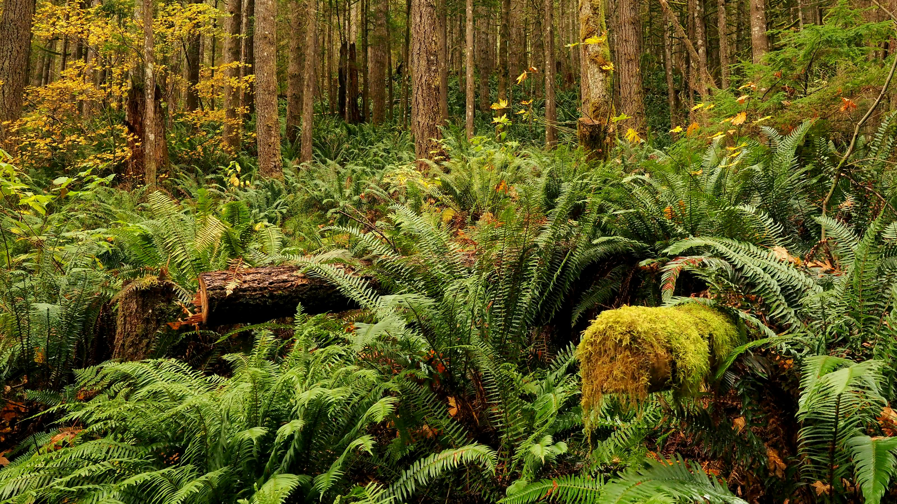

Respect the Balance: Why Protecting Nature Means Protecting Ourselves
Maria Clarissa Macario
SOSCITECH
Imagine a world where the rivers are no longer clean, where the forests are silent, and where whole species—animals, plants, insects—are forever exterminated. It sounds like some dystopian novel being brought to life, but this reality is sneaking in upon us all much sooner than we imagined. This destruction is not something that occurs "out there," in far-off rainforests or oceans we never see. It's occurring right now, all around us, and the effects are hitting much closer to home than we think. Protecting the natural world isn't just a feel-good cause for tree-huggers and environmental activists-it is a matter of survival for all of us.
At the heart of this issue lies biodiversity - an incredible variety of life on Earth, from the smallest microbes found in the soil to the largest mammals, which roam the savannas. Biodiversity is not about saving cute animals or beautiful landscapes but has served as the basis of everything that sustains us. It purifies our water, pollinates our crops, keeps our soils fertile, and even controls diseases. This fragile yet highly connected web of life ensures ecosystems function and provide the services we, as humans, rely upon every single day. Yet, despite its critical importance, we are tearing that web apart at an unprecedented rate.
There's habitat destruction, among other methods, through which we have been dismantling this natural system. From forests and wetlands to grasslands once replete with animal life, they are being replaced by agriculture, infrastructure, and urbanization. Imagine for a moment being that animal living in that forest and suddenly having your house turned into a barren stretch of farmland or a concrete jungle. Habitat loss is a death sentence for species, and in several instances, it pushes them to the point of extinction. As devastating as this is to wildlife, it also poses a serious problem for us. Forests are among the most important carbon sinks: they absorb tons of carbon dioxide that contribute to climate change. Losing these natural carbon sinks feeds the fire-planet, and its consequences-faster unfolding in higher frequencies of more intense and frequent weather events, rising sea levels, and destabilized food systems-unfold.
Advertisement

Perception buds : Connect Beyond Words.
Climate change itself is the wicked driver of biodiversity loss. Ecosystems that were intact for millennial times become thrown into disarray because of warming of the planet. Well-adapted species suddenly find themselves in unsuitable conditions. It's a real problem for polar bears, as the ice is melting away on which they depend for hunting. Today, coral reefs are often referred to as the "rainforests of the sea" owing to their staggering biodiversity. Today, these are dying off as oceans warm and become more acidic. These changes are just devastating from a natural aspect; they will have a direct impact on lives. For instance, the loss of coral reefs threatens not only the species contained within but also the livelihoods of millions of people who rely on fisheries for food and income.
That's not all. Destruction doesn't stop there, however. Pollution from plastics choking our oceans to pesticide poisoning crucial pollinators accelerates the decline of biodiversity. Overfishing depletes the stocks of fish faster than they can replenish, threatening global food security. Then there's the illegal wildlife trade, a brutal industry that pushes species toward extinction while also fueling the spread of zoonotic diseases—those that jump from animals to humans. This is just one example of what can happen when we disrupt natural ecosystems and get closer contact with wildlife: COVID-19 is only the latest reminder that the risk of future pandemics grows as we continue to encroach on nature.
The implications of this biodiversity crisis are staggering, and they aren't limited to the scientific-sounding grab bag of environmentalists and scientists. We all feel the impacts-more or less unaware of them. When ecosystems collapse, it's not merely the loss of wildlife-it's the unraveling of systems that keep our air clean, our climate stable, and our food on the table.
Public health is actually linked to the health of ecosystems. The levels of diseases are therefore normally thrown out of whack by the destruction of natural habitats. Ecosystems often often act as buffers by regulating wildlife populations and keeping nature between humans and animals, thus preventing the spread of diseases. When those systems break down, diseases can spread more easily. Recently, we saw the COVID-19 pandemic arise; its eventual link to wildlife markets and habitat loss is unmistakable. The greater the degradation of natural environments, however, the broader the door opens to a potential continuum in the spread of more frequent infectious diseases, potentially deadlier than those with which we are familiar.
Advertisement

TimeTouch : "Relive Your Best Moments."
Loss of biodiversity also has a very significant impact on food security. Actually, many crops that we use for fruits and vegetables, nuts, and seeds cannot be reproduced without pollinators. However, these pollinators - bees and butterflies - are rapidly declining due to habitat destruction, pesticide use, and changing climate. And without them, food production is impossible. This is not some fanciful worry about a bleak, far-off future-it can mean higher food prices, food shortages, and increased hunger in many parts of the world.
This degradation also imperils the economy. The interests of agricultural, tourist, and fishery industries are all well and living in a healthy ecosystems. Reefs, for example, support not only marine life but also coastal tourism and fisheries. Forests produce logs and medicinal plants among other resources. Thus, the economic loss of degradation will be phenomenal: loss of employment, collapse of industries, and entire communities—not only in the developed world—will suffer increased poverty and hardships.
It means simply this: we in our failure to protect nature fail to protect ourselves. The loss of biodiversity is the beginning, not just of an environmental tragedy, but of a human one. With each forested area we clear, each river we fill with pollutants, every species we overfish, we chip away at our very life-support systems.
But all hope is not lost. Biodiversity can be conserved after some urgent, concerted action taken from all over the globe. The governments, businesses, and citizens too need to act together to reverse the trend. Conservation activities, such as the protection of endangered species, restoration of habitats, and reduction of pollution, can make a difference. Sustainable agriculture practices may be developed, investment in renewable sources of energy, and increases in tougher laws on wildlife trade can work.
At the end of the day, biodiversity isn't just something you protect to help the planet survive for future generations. And that is reason enough. But it's also about being able to have a healthy, stable world to live in today. Nature doesn't need us; we need nature. And if we don't respect the balance that biodiversity provides, we are likely to learn the hard way just how much we depend on it.
After all, there is hope. This can only happen by protecting natural habitats, adopting sustainable practices, and facing and solving the issue of climate change. Our health, prosperity, and future depend on this. Biodiversity is not about saving the planet; it is about saving us.
GMOs: Feeding the World or Endangering Our Health?
For a quarter of a century, genetically modified organisms, or GMOs, have been at the center of public debate globally. They represent the promise of a better agriculture and food-delivery future to many while for others this invention is a source of danger to human health. While GMOs improve crop yields and increase resistance to pests and diseases, with a tremendous improvement in nutritional...
DIFFERENCE OF ENVIRONMENTAL ISSUE AND SOCIAL ISSUE
Scientists studying about climate change have demonstrated, Over the past 200 years of climate change research, scientists have proven that nearly all of global warming is from human activities. The greenhouse gases developed from these activities-primarily carbon dioxide and methane-are warming the earth far faster than ever in the last two millennia. As much as some of the world's major thoughts...
GENE THERAPY RESEARCH
Gene therapy and stem cell research can potentially change the medical research landscape by opening up diseases previously thought to be incurable for investigation and interference. Such promise, however, is accompanied by a set of ethical and social considerations that call for further scrutiny. The most vital question pertains to ethical considerations would be the concept of informed consent and should assume foremost importance so patients are...